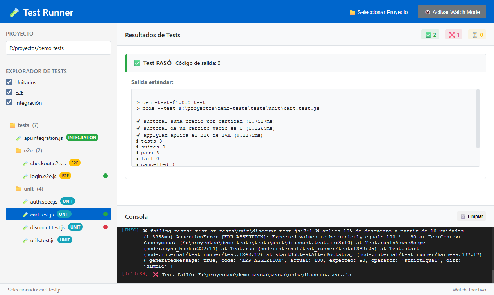

Explorador inteligente
Detecta automáticamente *.test.js, *.spec.ts, *.e2e.js e
*.integration.js en todo el árbol del proyecto.
Código abierto · MIT · v1.0.0
Abre cualquier proyecto JavaScript o TypeScript y ejecuta sus tests unitarios, de integración y E2E sin tocar la terminal. Resultados en tiempo real, watch mode y consola integrada.

Elige la carpeta raíz y la app escanea en busca de archivos de test, ignorando
node_modules.
Cada test se lanza con el script de tu package.json, así que respeta tu configuración.
Salida estándar y errores formateados, contadores en vivo y consola con todo el log.
Instaladores firmados para Windows, macOS y Linux. Pesa menos de 120 MB.
Todo lo que necesitas para pasar del «¿por qué falla este test?» al arreglo, sin cambiar de ventana.
Detecta automáticamente *.test.js, *.spec.ts, *.e2e.js e
*.integration.js en todo el árbol del proyecto.
Doble clic o Enter sobre un test. Se ejecuta con el runner que ya usa tu proyecto.
Vigila los archivos con Chokidar y te avisa en cuanto cambia un test, listo para relanzarlo.
Contadores de pasados, fallados y en ejecución, más indicadores de estado por archivo.
Muestra solo unitarios, E2E o de integración para centrarte en lo que estás tocando.
Todo el stdout y stderr con marca de tiempo y colores por severidad.
Test Runner no reimplementa ningún runner: invoca el script test, test:unit o
test:e2e de tu package.json. Si funciona en tu terminal, funciona aquí.
| Atajo | Acción |
|---|---|
| Ctrl/Cmd + O | Abrir proyecto |
| Ctrl/Cmd + W | Activar o desactivar watch mode |
| Ctrl/Cmd + L | Limpiar la consola |
| Enter | Ejecutar el test seleccionado |
Capturas reales de la aplicación ejecutando un proyecto de ejemplo con tests unitarios, de integración y E2E. Haz clic para ampliar.
AssertionError se resalta en la consola con su traza
completa.
Última versión: v1.0.0
Instalador .exe · 64 bits
~91 MB
Imagen .dmg · Apple Silicon
~105 MB
Ejecutable .AppImage
~112 MB
¿Prefieres ver todos los archivos? Todas las versiones en GitHub.
SmartScreen puede avisar de que el editor es desconocido porque el instalador no está firmado. Pulsa Más información → Ejecutar de todas formas.
Si Gatekeeper bloquea la app, ábrela con clic derecho → Abrir, o ejecuta
xattr -cr "/Applications/Test Runner.app".
Dale permisos de ejecución al AppImage:
chmod +x Test.Runner-1.0.0.AppImage y lánzalo con doble clic.
git clone https://github.com/cmurestudillos/test-runner.git
cd test-runner
pnpm install
pnpm start # ejecutar en desarrollo
pnpm package:win # generar instalador de Windows
pnpm package:mac # generar imagen de macOS
pnpm package:linux # generar AppImageRequisitos: Node.js 22+ y pnpm 11+.
Pulsa 📁 Seleccionar Proyecto (o Ctrl+O) y elige la carpeta raíz.
La app recorre el árbol ignorando node_modules y carpetas ocultas.
Un clic selecciona el archivo; un doble clic lo ejecuta. Con un test seleccionado,
Enter hace lo mismo. Test Runner lanza npm test <ruta>, o
npm run test:e2e / npm run test:unit si tu package.json define esos
scripts.
Con Ctrl+W activas el vigilante de archivos. Cada vez que guardes un test, la consola te lo indica para que lo relances.
Las casillas Unitarios, E2E e Integración filtran el árbol al vuelo.
| Patrón del archivo | Tipo asignado |
|---|---|
*.test.js · *.test.ts(x) |
Unitario |
*.spec.js · *.spec.ts(x) |
Unitario |
*.integration.js · *.integration.ts |
Integración |
*.e2e.js · nombres con cypress, playwright o
webdriver
|
E2E |
src/
├── main.js # proceso principal: escaneo, ejecución y watchers
├── preload.js # puente IPC seguro (contextIsolation activo)
├── renderer.js # estado e interfaz
├── index.html # estructura de la ventana
└── assets/ # estilos e iconosConstruida con Electron, Chokidar para el watch mode y fs-extra para el sistema de archivos. Sin frameworks de UI: HTML, CSS y JavaScript.
Los issues y pull requests son bienvenidos. Abre un issue describiendo el bug (con pasos, sistema operativo y captura) o la funcionalidad que echas de menos.